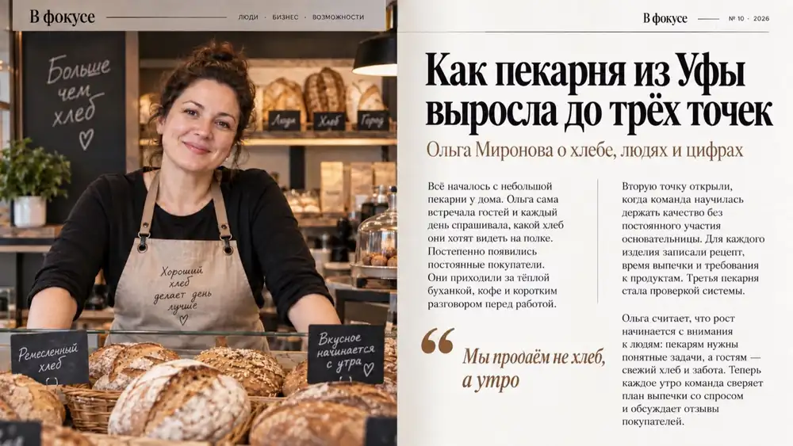
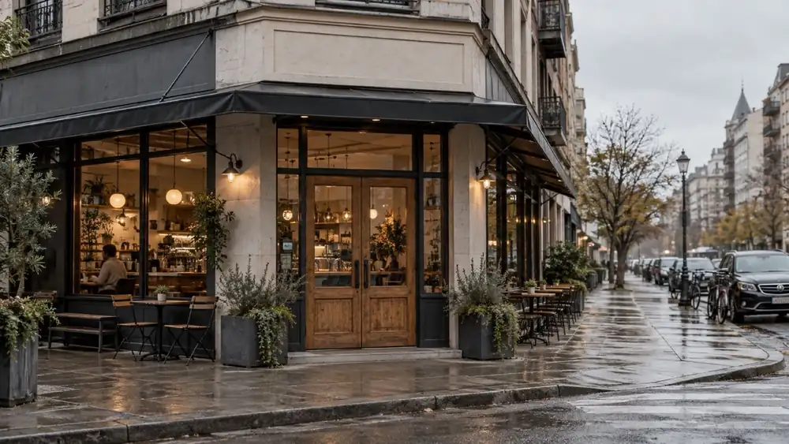
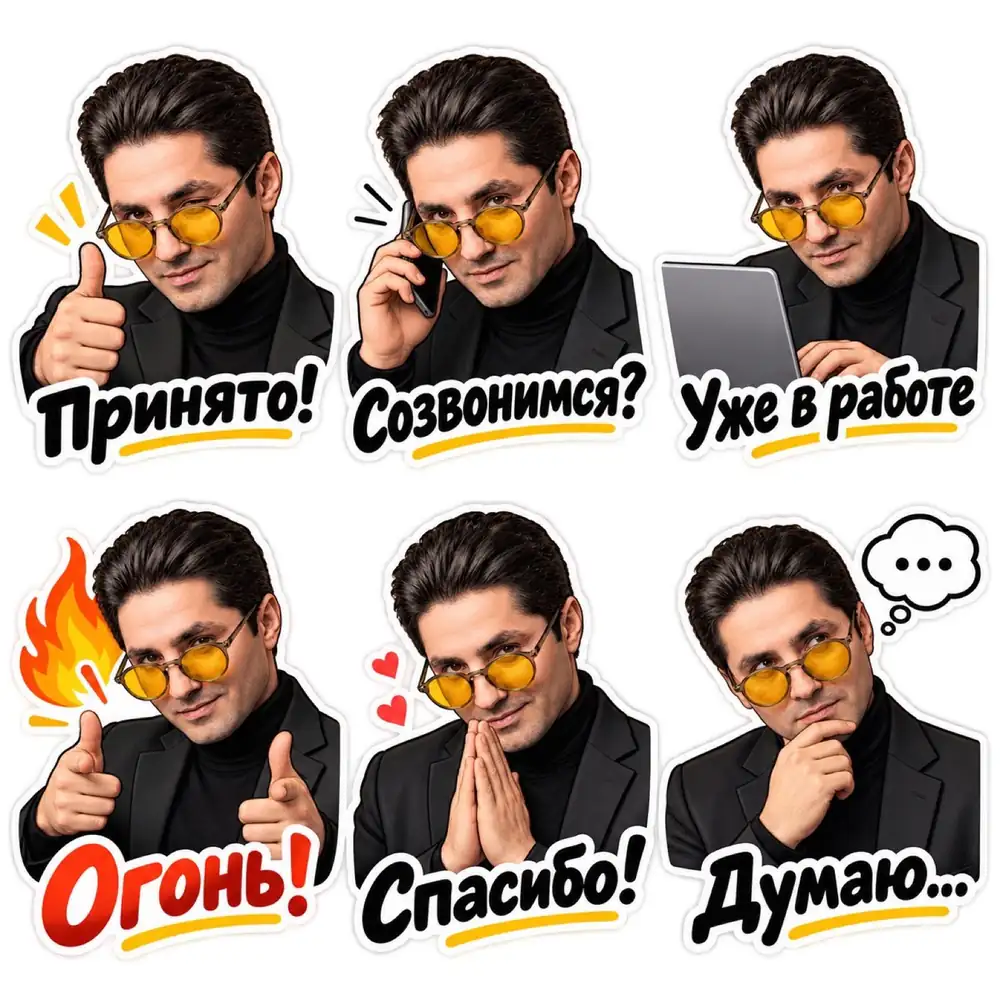
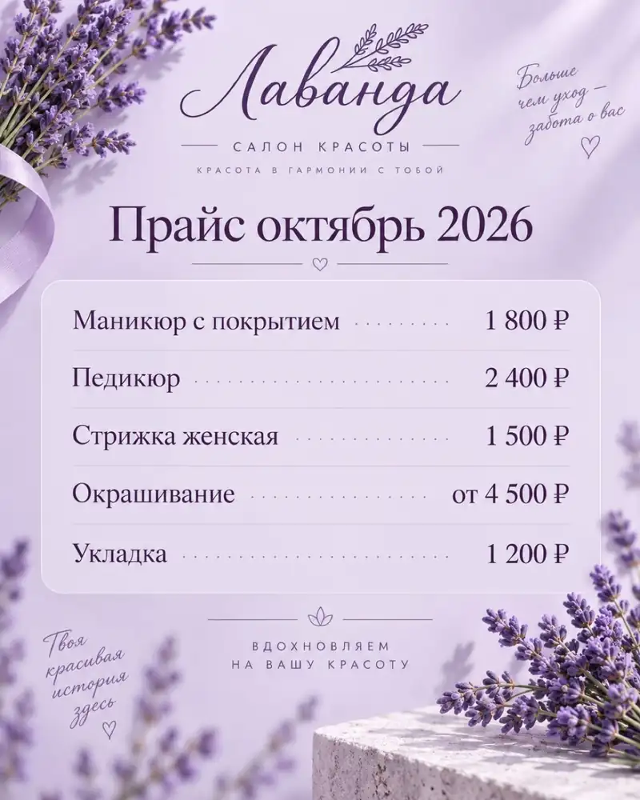

Практика после занятия 6
Визуал
Сдать до следующего занятия. «ИИ. Новая реальность», онлайн-поток 3 · Альберт Валеев
Запись урока · 7 ноября 2026 · 2:15:40
Таймкоды · 19 · нажмите время, видео перемотается
Визуал
GLM, презентация в NotebookLM, свой стиль, картинки.
Открыть GLM
Вход через Google, регистрироваться не нужно.
Открыть GLM · chat.z.ai ↗- Открытьchat.z.ai → «Войти» → через Google.
- РежимВыберите режим слайдов (PPT или AI Slides) рядом с полем ввода.
- ШаблонGLM покажет готовые шаблоны оформления. Выберите тот, что нравится.
Промпт и тема
Вместо скобок своя тема и для кого. Своей темы нет: касание ниже копирует готовую.
Презентация на тему: «[ваша тема. Например: Кофейня «Тепло»: чем мы полезны партнёрам по клубу]». Аудитория: [кто будет смотреть. Например: участники бизнес-клуба; клиент на первой встрече; инвестор; своя команда]. Содержание: проблема, кому это нужно, 3–5 аргументов, примеры из моей сферы, следующий шаг. 10 слайдов. Стиль: деловой, минималистичный, крупные заголовки, без рекламного шума. Цифры не выдумывай: если я их не дал, обойдись без цифр.
Смотреть и править
Через несколько минут слайды прямо в окне.
- ПланGLM покажет план слайдов: поправьте словами, потом подтвердите.
- СмотретьСлайды откроются прямо в окне, листайте там.
- ПравкаЧто не так, скажите словами: «слайд 3 короче», «добавь картинку на титульный».
- Какая тема и для кого.
- Скриншот двух-трёх слайдов.
Первой строкой хэштег, дальше пара слов и картинки. Частичный результат тоже подходит.
Документ на 20 слайдов
Новый чат в ChatGPT или Gemini.
Открыть ChatGPT · chatgpt.com ↗Помоги мне подготовить презентацию. Сначала задай мне по одному три вопроса: 1) о чём презентация и чем занимается мой бизнес или проект; 2) для кого она; 3) что должно произойти после показа: купили, записались, согласовали, запомнили. Когда я отвечу, напиши текст презентации на 20 слайдов. Для каждого слайда: «Слайд N. Заголовок до шести слов», под ним 2–4 коротких тезиса. Первый слайд титульный, последний со следующим шагом для зрителя. Используй только мои факты и цифры, ничего не выдумывай. Где фактов не хватает, поставь [уточнить]. Упакуй весь текст в файл Word (.docx) на скачивание. Если не умеешь создавать файлы, выдай текст одним блоком.
- ОтветьтеChatGPT задаст три вопроса. Отвечайте голосом: значок микрофона в поле ввода. Подробнее = лучше.
- ФайлОн пришлёт файл .docx: нажмите, и он скачается в папку «Загрузки». Это ваш источник для всей практики.
- В GeminiПод ответом «Поделиться» → «Экспорт в Документы»: файл сразу в Google Документах.
- Запасной путьСкопируйте текст, откройте docs.new и вставьте: это тоже готовый источник.
Документ в NotebookLM
Один блокнот, один источник: только ваш документ. Иначе он смешает лишнее.
Открыть NotebookLM · notebook.google.com ↗- Блокнотnotebook.google.com (теперь называется Gemini Notebook) → «Новый блокнот».
- Источник«Добавить источник» → «Загрузить» → папка «Загрузки» → ваш .docx. Или документ с Google Диска.
- СтудияСправа «Студия» → «Презентация». Нажмите карандаш рядом, чтобы открыть настройки, а не создавать вслепую.
- НастройкиФормат «Подробная», длина самая большая из предложенных, язык русский. В поле описания промпт ниже, только потом «Создать». Генерация 3–5 минут.
Что писать в «Настроить»
Два блока в одном поле. Блок 1 держит ваш текст целиком и просит оформить визуально: не меняйте. Блок 2 ваш фирменный стиль: цвета, шрифты, картинки.
БЛОК 1 · ТЕКСТ И ОФОРМЛЕНИЕ Сделай презентацию по загруженному источнику. Один слайд источника это один слайд презентации. Всего слайдов: 20. Язык: русский. Текст источника сохрани полностью: заголовки и тезисы не сокращай, не переписывай и не добавляй цифр, которых нет в источнике. Твоя задача оформить его визуально и красиво разложить по слайду: тезисы карточками, шагами со стрелками, схемой или сравнением, цифры крупно, к каждому слайду подходящая иконка, схема или фотоиллюстрация по смыслу. Не делай слайдов, где текст просто идёт списком. БЛОК 2 · ФИРМЕННЫЙ СТИЛЬ Цвета: [основной, акцентный и фон. Например: тёмно-зелёный, медь, светло-бежевый фон] Шрифты: [Например: крупный строгий заголовок без засечек, спокойный текст] Картинки и настроение: [Например: живые фото работы, тёплый свет, много воздуха] Чего нельзя: [Например: кислотных цветов, пестроты, мультяшных картинок]
Правка одной фразой и выгрузка
Карандаш «Изменить», правка по каждому слайду. Касание копирует фразу.
- ПравкаОткройте презентацию → «Изменить» → выберите слайд → напишите фразу. Остальные слайды не трогаются.
- Скачать⋮ → «Скачать PDF» для показа или «Скачать PowerPoint (.pptx)».
- ВажноВ PowerPoint слайды лежат картинками: текст там уже не поправить. Все правки делайте в NotebookLM до выгрузки.
- Скриншот двух-трёх слайдов.
- Что поправили карандашом.
Первой строкой хэштег, дальше пара слов и картинки. Частичный результат тоже подходит.
Образец
Чужая красивая презентация или готовый стиль из нашей библиотеки.
- ОбразецОткройте SlidesCarnival, Slidesgo или Pitch. Найдите презентацию «вот бы мне так».
- СкриншотыСнимите 3–5 скриншотов самых красивых слайдов. Mac: Cmd+Shift+4 и выделить. Windows: Win+Shift+S и выделить.
- ChatGPTНовый чат, приложите скриншоты скрепкой, вставьте промпт ниже. Он вернёт стиль одним блоком.
- NotebookLMТот же блокнот → Студия → Презентация → «Настроить» → промпт шага 3 со стилем → «Создать».
Вытащить стиль
Новый чат, 3–5 скриншотов приложены скрепкой.
Открыть ChatGPT · chatgpt.com ↗Вот презентация, стиль которой мне нравится (скриншоты во вложении). Опиши её визуальный стиль максимально детально, как готовый промпт для генератора презентаций. Разбери: палитру с кодами цветов, шрифты для заголовков и текста, расположение элементов на слайде, отступы, тип иллюстраций и иконок, фон, общее настроение. Выдай одним блоком, который я потом вставлю в другой инструмент. Уложись в 1 500 знаков с пробелами: поле в NotebookLM принимает около 2 000, туда ещё пойдёт сам промпт.
Сделай промпт ещё конкретнее, особенно по цветам (HEX) и шрифтам, и сократи до 1 300 знаков.
Тот же документ в новом стиле
Тот же блокнот, тот же источник. Меняется только блок 2.
Открыть NotebookLM · notebook.google.com ↗БЛОК 1 · ТЕКСТ И ОФОРМЛЕНИЕ Сделай презентацию по загруженному источнику. Один слайд источника это один слайд презентации. Всего слайдов: 20. Язык: русский. Текст источника сохрани полностью: заголовки и тезисы не сокращай, не переписывай и не добавляй цифр, которых нет в источнике. Твоя задача оформить его визуально и красиво разложить по слайду: тезисы карточками, шагами со стрелками, схемой или сравнением, цифры крупно, к каждому слайду подходящая иконка, схема или фотоиллюстрация по смыслу. Не делай слайдов, где текст просто идёт списком. БЛОК 2 · ФИРМЕННЫЙ СТИЛЬ [вставьте сюда стиль из ChatGPT или готовый стиль из нашей библиотеки стилей]
- Какой образец взяли.
- Скриншоты: было и стало.
Первой строкой хэштег, дальше пара слов и картинки. Частичный результат тоже подходит.
Три хода
Главное правило блока. Работает в любой нейросети.
- ГолосомРасскажите ChatGPT, что хотите: для чего картинка, что на ней, настроение, текст. Как другу.
- «Сделай промпт»ChatGPT сам разложит: объект, сцена, стиль, свет, цвета, формат, текст в кавычках.
- Картинка«Создай изображение по этому промпту». Потом правки словами: «теплее», «текст крупнее».
Мне нужна афиша для моей кофейни «Тепло». Осень, у нас вернулся тыквенный латте, с 10 октября. Хочу уютно, тёплые цвета: стакан латте на деревянной стойке у окна, за окном жёлтые листья и дождик. Это для поста в Instagram, текст на картинке: «Тыквенный латте вернулся».
Сделай из моего рассказа подробный промпт для генерации картинки. Распиши: что в кадре, где, стиль, свет, цвета, формат (пост 4:5, сторис 9:16 или баннер 16:9) и какой текст будет на картинке, дословно в кавычках. Если чего-то не хватает, сначала задай мне один вопрос. Потом выдай только промпт.
Создай изображение по этому промпту.
Слева «Сделай картинку для кофейни»: красиво, но про что? Справа три хода: наш продукт, наша дата, наш текст. Генератор тот же.
Где рисовать
Оба бесплатно, у обоих дневной лимит.
Открыть ChatGPT · chatgpt.com ↗Открыть Gemini · gemini.google.com ↗- ChatGPT«+» → «Создать изображение». Images 2.5 с 8 сентября, бесплатно с лимитом. Лучше всех держит лицо и текст по-русски.
- ШаблоныВ том же меню плитки: постер, мерч, фото товара, портрет, инфографика. Нажали, приложили фото, готово.
- Gemini«+» → «Создание изображений»: Nano Banana, бесплатно. Сильна в редактуре вашего фото.
Свежие возможности: выберите одну
Вместо скобок своё. Слова «Например:» внутри скобок только подсказка. Под каждым промптом пример результата.
На первом фото я, на втором вещь с маркетплейса. Покажи меня в этой вещи: [где. Например: на осенней улице города; в офисе; на сцене]. Полный рост до колен, фотореализм. Лицо и фигуру не меняй.
Сделай обложку глянцевого делового журнала «[название. Например: В фокусе]» с человеком с моего фото. Заголовки на обложке: «[главный. Например: Как я открыл третью точку]», «[второй. Например: 20 слайдов за час]», «[третий. Например: Клуб, который растёт]». Номер выпуска и штрихкод в углу. Студийный свет, лицо не меняй. Формат 4:5.
Разворот делового журнала «[название. Например: В фокусе]» 16:9. Слева большое фото: [кто и где. Например: владелица пекарни за прилавком с хлебом]. Справа статья: заголовок «[Например: Как пекарня из Уфы выросла до трёх точек]», подзаголовок «[Например: Ольга Миронова о хлебе, людях и цифрах]», колонки текста и вынесенная цитата «[Например: Мы продаём не хлеб, а утро]». Журнальная вёрстка, аккуратная типографика.

Сделай фотореалистичный интерьер [чего. Например: моей кофейни] строго по этому плану: [что где стоит. Например: стойка справа, пять круглых столиков, большое окно слева]. Стиль [например: скандинавский, светлое дерево, растения], утренний свет. Формат 16:9.
Фасад [чего. Например: небольшой кофейни на углу улицы], днём, вывески нет, пасмурно. Фотореализм, формат 16:9.

Тот же кадр, но вечер: тёплый свет из окон, над входом неоновая вывеска «[название. Например: Тепло]». Остальное не меняй.
Теперь зима: снег на тротуаре и на козырьке, гирлянда над окнами. Вывеску и всё остальное не меняй.
Это фото моего товара с телефона. Сделай из него студийную карточку для маркетплейса: [фон. Например: светлый бежевый], мягкая тень, [окружение. Например: сухоцветы рядом], резкость, дорогой вид. Товар, этикетку и форму не меняй. Квадрат 1:1.
Сделай из моего фото стикерпак для Telegram: 6 стикеров, мультяшный стиль, белая обводка, белый фон, лицо узнаваемо. Эмоции и подписи: «Принято!», «Созвонимся?», «Уже в работе», «Огонь!», «Спасибо!», «Думаю…».

Прайс-лист [кого. Например: салона красоты «Лаванда»] одной картинкой 4:5. Заголовок «[Например: Прайс октябрь 2026]». Строки с ценами: «[услуга · цена. Например: Маникюр с покрытием · 1 800 ₽]», «[Например: Педикюр · 2 400 ₽]», «[Например: Стрижка женская · 1 500 ₽]», «[Например: Окрашивание · от 4 500 ₽]», «[Например: Укладка · 1 200 ₽]». Фон [цвет и детали. Например: нежно-сиреневый, веточки лаванды], аккуратная типографика, цены выровнены. Весь текст дословно, по-русски.

Покажи меня на сцене большой бизнес-конференции: за мной огромный экран с надписью «[тема выступления. Например: ИИ и визуал без дизайнера]», зал в полумраке, свет софитов. Фотореализм, лицо не меняй. Формат 16:9.
Готовые промпты с превью
Библиотека: видно результат до генерации.
Открыть bananaprompts.xyz ↗- Открытьbananaprompts.xyz: сотни промптов с картинкой результата.
- ВыбратьНашли картинку «хочу так» без пометки PREMIUM (такие платные) → значок копирования в углу карточки → промпт скопирован.
- ВставитьВ Gemini или ChatGPT, своё фото скрепкой. Промпт на английском, это нормально. Текст на картинке просите по-русски в кавычках.
112 команд: ускоритель
Короткая приписка на английском: ИИ читает её как формат.
Открыть 112 команд ↗- ФотоПриложите своё фото или фото товара. Для схем и инфографики фото не нужно.
- КомандаНапишите команду из списка, нажатие на странице копирует её. Например /billboard.
- ДетальДобавьте одну деталь словами: «для поста в Telegram», «на закате».
- Две-три картинки.
- Какой приём попробовали.
Первой строкой хэштег, дальше пара слов и картинки. Частичный результат тоже подходит.
NotebookLM и свой наставник
Кто хочет глубже: блокнот как база знаний и Gem-бот, который говорит как ваш эксперт.
Тема и источники
Выберите одну тему. Касание копирует пример.
- Блокнотnotebook.google.com → «Новый блокнот».
- Источники«Добавить источник»: файлы, сайты, видео YouTube ссылкой, Google Диск или скопированный текст. Бесплатно до 50 источников.
- Найти в интернетеСвоих материалов мало: в окне источников поиск, он сам найдёт сайты по теме. Каждый проверьте, лишнее уберите галочкой.
Видео YouTube пачкой
Как Альберт обещал на уроке: целый плейлист или канал в блокнот одной кнопкой.
Расширение «Add to NotebookLM» · Chrome ↗- ПоставитьКнопка выше → «Установить». Нужен Chrome или Яндекс Браузер.
- ПлейлистОткройте на YouTube плейлист или канал.
- КнопкаЗначок расширения справа от адресной строки → выберите блокнот → «Add Playlist». Каждое видео станет отдельным источником.
Спросить и визуализировать
В чате блокнота спросите по своей теме: ответ придёт со ссылкой на место в источнике. Потом Студия.
Инфографика по источнику: 5 главных мыслей моей презентации, у каждой иконка и короткая подпись. 2–3 ключевые цифры крупно, только если они есть в источнике. Подписи по-русски. Стиль спокойный, деловой.
Аудиопересказ в формате критики: два ведущих спорят об источнике. Найдите слабые места: где автор может ошибаться, преувеличивать или чего-то не договаривает, и что мне стоит проверить самому. Только по источникам блокнота. На русском, 10 минут.
Видеопересказ на 2–3 минуты для [кого. Например: нового клиента; партнёра по клубу] по источнику: чем я занимаюсь, кому это полезно и что сделать после просмотра. Только факты из источника. На русском.
- Какая тема и сколько источников.
- Скриншот инфографики.
Первой строкой хэштег, дальше пара слов и картинки. Частичный результат тоже подходит.
Блокнот с видео эксперта
Выберите, чей наставник вам нужен. Касание копирует пример.
Новый блокнот, источники: 20–50 видео эксперта. Быстрее всего расширением из практики 5, шаг 2.
Стиль общения
В чате этого блокнота.
Определи стиль, манеру подачи, характерные слова [имя эксперта], скорость общения и то, как он коммуницирует. Мне важно, чтобы ты описал стилистику общения максимально глубоко, исходя из анализа этих видео.
Скопируйте ответ целиком: он нужен в шаге 3.
Инструкция
Новый чат в ChatGPT или Gemini, в конце вставьте стиль из шага 2.
Ниже описание стиля общения [имя эксперта]. Сделай из него инструкцию для Gem-бота «[имя эксперта]. Разбор моей задачи». В инструкции должно быть: 1. Кто он и чем мне полезен. 2. Главный источник знаний: подключённый блокнот с его видео. Сначала ищет ответ в блокноте, потом отвечает. 3. Если в блокноте ответа нет, честно говорит об этом и ничего не выдумывает. 4. Как он общается: манера, темп, характерные фразы из описания. Со мной на «ты». 5. В конце ответа один конкретный следующий шаг для меня. Описание стиля: [вставьте ответ блокнота из шага 2]
Gem-бот с блокнотом
Gemini → «Gems» → «Создать Gem».
Открыть Gems в Gemini ↗- СоздатьНазвание, в поле инструкции вставьте ответ из шага 3.
- ЗнанияВ разделе знаний «+» → «Добавить блокнот» → ваш блокнот с видео эксперта.
- СохранитьОткройте бота и задайте вопрос по своей задаче.
- Чей наставник и сколько видео в блокноте.
- Скриншот ответа бота.
Первой строкой хэштег, дальше пара слов и картинки. Частичный результат тоже подходит.
Отчёт по каждой практике
Сделали практику, сразу пишите отчёт в чат группы. Первой строкой хэштег: #glm, #notebook, #стиль, #картинки, по желанию #блокнот, #наставник. Дальше пара слов и картинки.
#notebook ПРИМЕР: тема выдуманная, у вас своя. Документ на 20 слайдов про клининг офисов, в блок 2 вписал зелёный и белый, спокойные фото. NotebookLM сохранил весь текст, разложил по карточкам и схемам. Скриншоты трёх слайдов ниже. Карандашом поправил два слайда: «цифру крупно» и «убери пятый пункт».
Не получилось, застряли, выдал ерунду? Это тоже результат. Присылайте как есть, разберём.